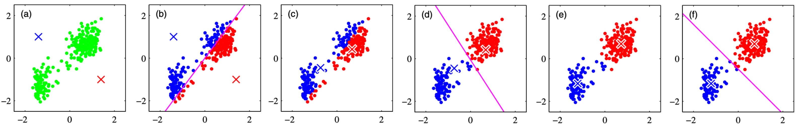
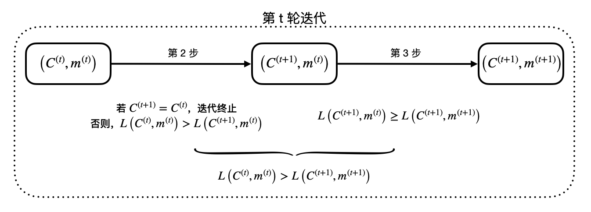

k-means Algorithm
谈到聚类，k-means 无疑是最先想到的算法之一了。其思想异常的简单有效，但隐藏着许多值得深入探究的奥秘。
k-means
理论推导
设有样本集 \(\{\mathbf x_1,\ldots,\mathbf x_N\}\)，其中 \(\mathbf x_n\in \mathbb R^d\)；又设 \(C:\mathbb N\to\mathbb N\) 表示对样本集的一个划分，\(C(n)=k\) 表示将 \(\mathbf x_n\) 分到类 \(k\) 中。k-means 算法的目标是找到一种划分使得所有样本到其所属类中心的距离之和最小： \[ \min_{C,\mathbf m_1,\ldots,\mathbf m_K}~\sum_{k=1}^K\sum_{C(n)=k}\|\mathbf x_n-\mathbf m_k\|^2 \] 其中 \(\mathbf m_k\) 表示类 \(k\) 的类中心。这是一个组合优化问题，直接求解是 NP-hard 的，因此我们采用交替迭代的方式求解，即将问题拆解为： \[ \min_{C}~\sum\limits_{k=1}^K\sum_{C(n)=k}\|\mathbf x_n-\mathbf m_k\|^2 \quad\text{and}\quad \min_{\mathbf m_1,\ldots,\mathbf m_K}~\sum\limits_{k=1}^K\sum_{C(n)=k}\|\mathbf x_n-\mathbf m_k\|^2 \] 具体而言，我们首先固定类中心，求最优划分： \[ \min_C~\sum_{k=1}^K\sum_{C(n)=k}\|\mathbf x_n-\mathbf m_k\|^2 \] 显然，该问题的最优解就是将每个样本划分给距离它最近的那个中心： \[ C(n)=\text{argmin}_{k=1}^K~\|\mathbf x_n-\mathbf m_k\|^2,\quad n=1,\ldots,N \] 随后，固定划分不变，求各类最优中心： \[ \min_{\mathbf m_1,\ldots,\mathbf m_K}~\sum_{k=1}^K\sum_{C(n)=k}\|\mathbf x_n-\mathbf m_k\|^2 \] 易知该问题的最优解是各类样本的均值： \[ \mathbf m_k=\frac{1}{n_k}\sum_{C(n)=k}\mathbf x_n,\quad k=1,\ldots,K \] 其中 \(n_k\) 表示属于第 \(k\) 类的样本数量。迭代执行上述两步直至收敛即可。

k-means 算法步骤
- 随机选择样本初始化类中心 \((\mathbf m_1,\ldots,\mathbf m_K)\).
- 对当前中心，将第 \(i\) 个样本划分给最近的中心，即 \(C(n)=\text{argmin}_{k=1}^K~\|\mathbf x_n-\mathbf m_k\|^2\).
- 对当前划分，取各类样本均值为新的类中心，即 \(\mathbf m_k=\frac{1}{n_l}\sum\limits_{C(n)=k}\mathbf x_n\).
- 迭代执行 2、3 步直至收敛。
收敛性分析
k-means 算法一定收敛吗？答案是肯定的。对每一轮迭代：
- 第 2 步中，如果新的划分与上一轮的划分相同，那么下一次划分也将相同，迭代终止；
- 第 2 步中，如果新的划分与上一轮的划分不同，必然是因为有样本发现了更近的类中心，所以损失函数值必然减小；
- 第 3 步中，损失函数值不增。

故每一轮迭代后，如果没有终止，损失函数必然减小。再注意到将 \(n\) 个样本划分成 \(k\) 类的方案数是有限的，因此只可能出现有限次迭代，故 k-means 必然在有限步内收敛。需要注意的是，虽然 k-means 一定收敛，但可能收敛到局部最优解，这完全取决于初始化的情况。因此在实际应用中，为了避免得到局部最优，常用不同随机种子跑多次，取损失最小的结果。
其他距离度量
k-means 算法是基于欧式距离的，这自然引发了我们思考——能不能采用其他的距离度量呢？答案是算法的核心思想依旧适用，只不过这时候不该叫做 k-means 了——"means" 这个名称来自于第 3 步中求均值，而之所以求均值，是因为均值是以欧式距离为损失函数的最优解。改变了距离度量，就改变了最优解。换句话说，如果使用其他距离确定划分（第 2 步），却依然用均值来更新类中心（第 3 步），就会导致第 2、3 步的损失函数不同，使得算法不收敛——毕竟算法的收敛性证明依赖于第 2、3 步在优化同一个损失函数。
一般而言，对于任意距离度量 \(\text{dist}(\cdot,\cdot)\)，k-means 可以扩展为以下框架：
k-means 一般框架
- 随机初始化 \(k\) 个中心 \((\mathbf m_1,\ldots,\mathbf m_K)\).
- 对当前中心，将第 \(i\) 个样本划分给最近的中心，即 \(C(n)=\text{argmin}_{k=1}^K~\text{dist}(\mathbf x_n,\mathbf m_k)\).
- 对当前划分，求各类最优中心：\(\min\limits_{\mathbf m_1,\ldots,\mathbf m_K}~\sum\limits_{k=1}^K\sum\limits_{C(n)=k}\text{dist}(\mathbf x_n,\mathbf m_k)\)，对于不同距离度量，最优解的形式有所不同。
- 迭代执行 2、3 步直至收敛。
可以看见，更换距离度量后，问题的关键在于求解第 3 步。下面我们探究算法在其他几种距离下的具体形式。
曼哈顿距离
曼哈顿距离，也即 L1 距离，定义为： \[ \text{dist}(\mathbf x,\mathbf y)=\|\mathbf x-\mathbf y\|_1=\sum_{j=1}^d |x_j-y_j| \] 在曼哈顿距离下，第 3 步的最优解是中位数 (median)。因此，该算法被称作 k-medians.
中位数相比于均值的优势在于不易受到噪声点的干扰——如果有一个数据点特别离谱，它对均值的影响将是巨大的，但中位数可能根本不变。
汉明距离
如果样本各维度都取离散值，汉明距离也是常用的一种度量： \[ \text{dist}(\mathbf x,\mathbf y)=\sum_{j=1}^d[x_j\neq y_j] \] 即比较两个向量有多少维取值不同。在汉明距离下，第 3 步的最优解是众数 (mode)。因此，该算法被称作 k-modes.
余弦相似度
余弦相似度定义为： \[ \text{dist}(\mathbf x,\mathbf y)=\cos\langle\mathbf x,\mathbf y\rangle=\frac{\mathbf x^\mathsf T\mathbf y}{\|\mathbf x\|\|\mathbf y\|} \] 我们尝试一下第 3 步能否求出解析解： \[ \max_{\mathbf m_1,\ldots,\mathbf m_K}~\sum_{k=1}^K\sum_{C(n)=k}\frac{\mathbf x_n^\mathsf T\mathbf m_k}{\|\mathbf x_n\|\|\mathbf m_k\|} \] 由于类与类互相独立，所以只需考虑： \[ \max_{\mathbf m_k}~\sum_{C(n)=k}\frac{\mathbf x_n^\mathsf T\mathbf m_k}{\|\mathbf x_n\|\|\mathbf m_k\|} \] 由于 \(\mathbf m_k\) 模长与优化目标无关，不妨假定为 \(1\)，则问题变为： \[ \begin{align} \max_{\mathbf m_k}~&\sum_{C(n)=k}\frac{\mathbf x_n^\mathsf T\mathbf m_k}{\|\mathbf x_n\|}\\ \text{s.t.}~&\|\mathbf m_k\|^2=1 \end{align} \] 构造拉格朗日函数： \[ L(\mathbf m_k,\lambda)=\sum_{C(n)=k}\frac{\mathbf x_n^\mathsf T\mathbf m_k}{\|\mathbf x_n\|}-\lambda (\|\mathbf m_k\|^2-1) \] 求偏导并令为零： \[ \frac{\partial L}{\partial \mathbf m_k}=\sum_{C(n)=k}\frac{\mathbf x_n}{\|\mathbf x_n\|}-2\lambda {\mathbf m_k}=\mathbf 0 \] 解得： \[ \mathbf m_k=\frac{1}{2\lambda}\sum_{C(n)=k}\frac{\mathbf x_n}{\|\mathbf x_n\|} \] 其中 \(1/2\lambda\) 是归一化系数，以使得 \(\mathbf m_k\) 是单位向量。不过鉴于余弦相似度与 \(\mathbf m_k\) 模长无关，所以是否归一化也不重要。综上所述，对于类 \(k\)，其类中心 \(\mathbf m_k\) 应更新为所有属于类 \(k\) 的样本归一化后的和。该算法被称作 spherical k-means，因为归一化操作意味着样本始终在单位球面上。
特别地，倘若样本 \(\mathbf x_n\) 本来就是归一化的，由于两个单位向量的余弦相似度与欧氏距离是等价的： \[ \|\mathbf x-\mathbf y\|_2^2=\mathbf x^\mathsf T \mathbf x+\mathbf y^\mathsf T \mathbf y-2\mathbf x^\mathsf T\mathbf y=2(1-\mathbf x^\mathsf T\mathbf y)=2(1-\cos\langle\mathbf x,\mathbf y\rangle) \] 所以在这个特殊情况下，根据余弦相似度做 spherical k-means，和根据欧式距离做 k-means 是等价的。
任意距离
对于任意的距离度量，第 3 步很可能没有一个像均值/中位数/众数那么好看的解，而最为暴力的求解方法就是——枚举！我们当然不可能在实值空间里枚举，但可以只在样本点中枚举——这就是 k-medoids 算法。可见，k-medoids 得到的中心点一定是样本点，这是它与 k-means、k-medians 和 k-modes 的不同之处。k-medoids 有一个特殊的应用场景——只知道样本点两两之间的距离，但不知道样本点具体是多少。注意到无论是 k-means, k-medians 还是 k-modes，计算均值/中位数/众数必然需要样本点具体的值，所以它们无法应用在这个特殊的场景下。
综上所述，我们发现想要用一个新的距离度量，只需要想办法求解第 3 步——如果没有解析解，那就枚举（k-medoids）；如果有，恭喜你，你可以把这个算法叫做 「k-some_strange_word_starting_with_the_letter_m」 了！（大雾）
Soft k-means
在 k-means 算法中，每一个数据点隶属于一个类，这是一种 hard 的模式。与之相对的，soft 聚类不把一个数据点硬分给一类，而是给出它属于各个类的“置信度”，表示它属于各个类的程度。在有些场景下，我们也许更希望使用 soft 模式。
理论推导
回顾 k-means 是用迭代的方式优化下述目标： \[ \sum_{k=1}^K\sum_{C(n)=k}\|\mathbf x_n-\mathbf m_k\|^2 \] 定义指示变量： \[ \gamma_{nk}=\begin{cases}1,&\text{if }C(n)=k\\0,&\text{otherwise}\end{cases} \] 那么优化目标可以改写为： \[ \sum_{k=1}^K\sum_{n=1}^N\gamma_{nk}\|\mathbf x_n-\mathbf m_k\|^2 \] k-means 硬就硬在 \(\gamma_{nk}\) 是一个 0/1 变量。当 \(\gamma_{nk}=1\) 时，样本 \(\mathbf x_n\) 被划分到类 \(k\)，表明它距离 \(\mathbf m_k\) 最近，即： \[ k=\text{argmin}_{j=1}^K\|\mathbf x_n-\mathbf m_j\|^2 \] 于是 \(\gamma_{nk}\) 可以写作： \[ \gamma_{nk}=\text{onehot}\left(\text{argmin}_{j=1}^K\|\mathbf x_n-\mathbf m_j\|^2\right)_k=\text{onehot}\left(\text{argmax}_{j=1}^K(-\|\mathbf x_n-\mathbf m_j\|^2)\right)_k \] 用 \(\text{softmax}\) 作为 \(\text{onehot}(\text{argmax})\) 的平滑近似： \[ \gamma_{nk}\approx\hat\gamma_{nk}=\text{softmax}\left(-\|\mathbf x_n-\mathbf m_j\|^2;\tau\right)_k=\frac{e^{-\|\mathbf x_n-\mathbf m_k\|^2/\tau}}{\sum_{j=1}^Ke^{-\|\mathbf x_n-\mathbf m_j\|^2/\tau}} \] 此时 \(\hat\gamma_{nk}\) 还可以解释为 \(\mathbf x_n\) 属于类 \(k\) 的概率。用 \(\hat\gamma_{nk}\) 替换 \(\gamma_{nk}\)，即得到 soft k-means 的优化目标： \[ \sum_{k=1}^K\sum_{n=1}^N\hat\gamma_{nk}\|\mathbf x_n-\mathbf m_k\|^2 \] 和 hard k-means 一样，我们用迭代的方式来求解。不过在第 3 步中，优化问题变成了：
\[ \min_{\mathbf m_1,\ldots,\mathbf m_K}~\sum_{k=1}^K\sum_{n=1}^N\hat\gamma_{nk}\|\mathbf x_n-\mathbf m_k\|^2 \] 易知其最优解变成了各样本的加权平均： \[ \mathbf m_k=\frac{\sum_{n=1}^N\hat\gamma_{nk}\mathbf x_n}{\sum_{n=1}^N\hat\gamma_{nk}},\quad k=1,\ldots,K \] 总结一下，soft k-means 算法的步骤如下：
soft k-means 算法步骤
- 随机选择样本初始化类中心 \((\mathbf m_1,\ldots,\mathbf m_K)\).
- 对当前中心，计算各样本属于各类的概率 \(\hat\gamma_{nk}=\dfrac{e^{-\|\mathbf x_n-\mathbf m_k\|^2/\tau}}{\sum_{j=1}^Ke^{-\|\mathbf x_n-\mathbf m_j\|^2/\tau}}\).
- 对当前 \(\hat\gamma\)，计算类中心 \(\mathbf m_k=\dfrac{\sum_{n=1}^N\hat\gamma_{nk}\mathbf x_n}{\sum_{n=1}^N\hat\gamma_{nk}}\).
- 迭代执行 2、3 步直至收敛。
联系 GMM
熟悉 GMM 的朋友可能已经发现了，soft k-means 和 GMM 的形式非常相似。我们先回顾一下 GMM 模型：
GMM 求解步骤
随机初始化模型参数 \(\alpha_k,\boldsymbol\mu_k,\mathbf\Sigma_k,\,k=1,\ldots,K\).
E-step. 计算隐变量的概率分布： \[q_{nk}=\frac{\alpha_k\phi(\mathbf x_n;\boldsymbol\mu_k,\mathbf\Sigma_k)}{\sum_{j=1}^K\alpha_j\phi(\mathbf x_n;\boldsymbol\mu_j,\mathbf\Sigma_j)},\quad n=1,\ldots,N,\;k=1,\ldots,K\]
M-step. 更新参数： \[\begin{align}&\alpha_k\gets\frac{1}{n}{\sum_{n=1}^Nq_{nk}}&& k=1,\ldots,K\\&\boldsymbol\mu_k\gets\frac{\sum_{n=1}^Nq_{nk}\mathbf x_n}{\sum_{n=1}^N q_{nk}}&& k=1,\ldots,K\\&\mathbf\Sigma_k\gets\frac{\sum_{n=1}^Nq_{nk}(\mathbf x_n-\boldsymbol\mu_k)(\mathbf x_n-\boldsymbol\mu_k)^\mathsf T}{\sum_{n=1}^Nq_{nk}}&& k=1,\ldots,K\end{align}\]
迭代执行第 2、3 步直至收敛。
如果我们取： \[ \begin{align} &\alpha_k=1/K,&k=1,\ldots,K\\ &\mathbf\Sigma_k=(\tau/2)\mathbf I,&k=1,\ldots,K \end{align} \] 那么 E-step 将简化为： \[ q_{nk}=\frac{e^{-\|\mathbf x_n-\boldsymbol\mu_k\|^2/\tau}}{\sum_{j=1}^Ke^{-\|\mathbf x_n-\boldsymbol\mu_j\|^2/\tau}} \] 且 M-step 中只需要更新 \(\boldsymbol\mu\)： \[ \boldsymbol\mu_k\gets\frac{\sum_{n=1}^Nq_{nk}\mathbf x_n}{\sum_{n=1}^Nq_{nk}} \] 可见这与 soft k-means 算法完全一致！所以我们有结论：soft k-means 是 GMM 在各高斯分布选择概率相同且协方差矩阵为单位阵的倍数下的特殊情况。
现在，让我们回头看看 hard k-means。要从 soft 变回 hard，只需要让 \(\text{softmax}\) 里的温度系数 \(\tau\) 趋近于 \(0\)。对应到 GMM 中，相当于让协方差矩阵 \(\mathbf\Sigma\) 趋近于 \(0\)，即高斯分布趋近 Dirac delta 函数。因此，k-means 是 GMM 在各高斯分布趋近 Dirac delta 函数且选择概率相同下的特殊情况。
参考文献
- 李航. 统计学习方法. ↩︎
- wlad. Proof of convergence of k-means. https://stats.stackexchange.com/q/188352 ↩︎
- Shivaram Kalyanakrishnan. k-means Clustering. https://www.cse.iitb.ac.in/~shivaram/teaching/old/cs344+386-s2017/resources/classnote-2.pdf ↩︎
- Dhillon, Inderjit S., and Dharmendra S. Modha. Concept decompositions for large sparse text data using clustering. Machine learning 42, no. 1 (2001): 143-175. ↩︎
- Bauckhage, Christian. Lecture notes on data science: Soft k-means clustering. ↩︎